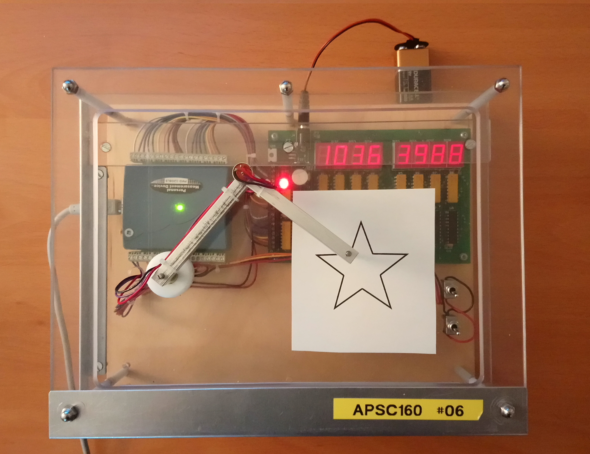

Lab 6: A 2D Digitizer
- Overview
Learning Goals:
- To become familiar with a typical data acquisition (DAQ) device
- To experiment with and take laboratory measurements using the device
- To import, analyze, and plot collected measurements in a spreadsheet
Overview:
In this lab, we will compute some characteristics of the hardware device, and use this information to create a 2D digitizer (or tracked pen). The end-goal is to be able to digitally reproduce an image traced using the tip of the jointed arm.
 This lab is different from previous labs in that:- You will have access to Connect, these instructions, and all course-related materials during the lab
- There is not C programming involved. The programs you need will be given to you as executables.
- There are no separate pre-lab and in-lab components. You still need to prepare by studying the material before going to the lab, but the activities described here are exactly what you will do during the lab period.
- This is not a quiz. You may ask for help from the TAs, and from your classmates, but each student must still submit their own work.
- This lab is a practical example of the system described in Lab 1.
- This lab is divided into two parts:
- An In-Lab componenent, which must be completed and submitted during the scheduled lab period.
- An At-Home componenent, which is due the following week.
Timeline
In-Lab Component:- The in-lab portion will be done during your regularly scheduled lab period. The deliverables for this part must be submitted by the end of the period, as usual.
- The at-home portion will depend on the in-lab material, so it is extremely important to get this first component correct and collect your data carefully. These materials will be returned to you at the end of the week.
- It is strongly recommended to attempt the at-home portion during the lab session if you have time, to ensure that there are no errors in your data collection.
- The at-home portion can be done any time after the lab session, either from home or using the lab computers. It is due at the same time for all lab sections.
- The data you use for this portion must be the same as the data you collected and submitted during the in-lab portion, so it is extremely important to ensure you collected the data carefully.